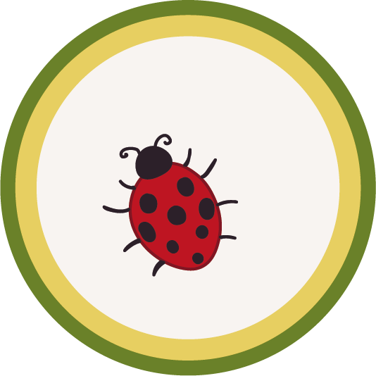
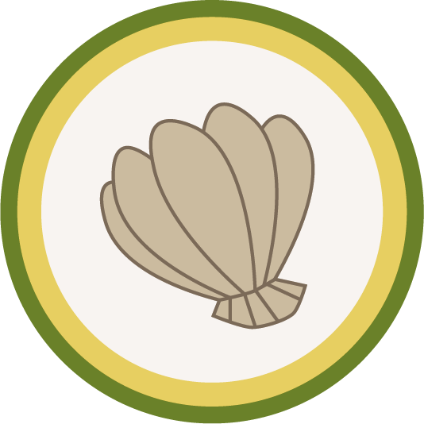
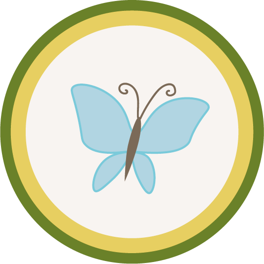
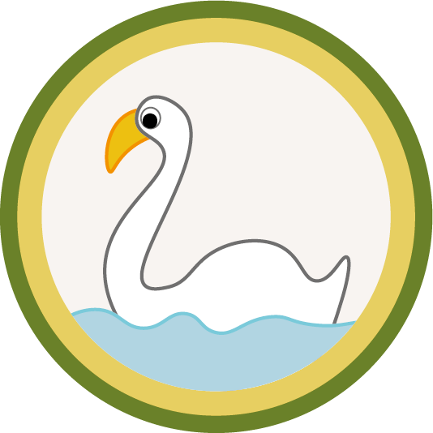
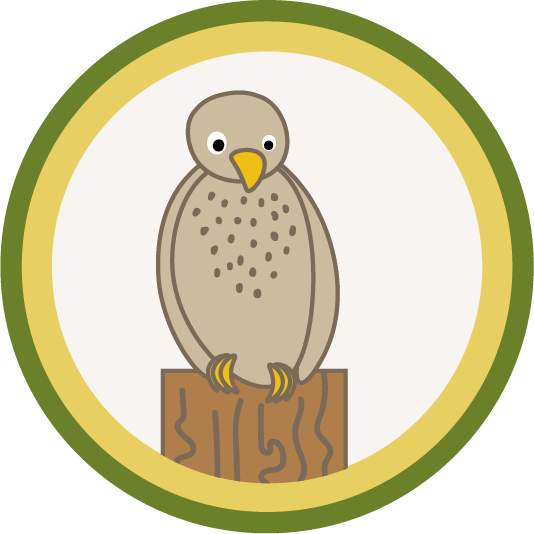
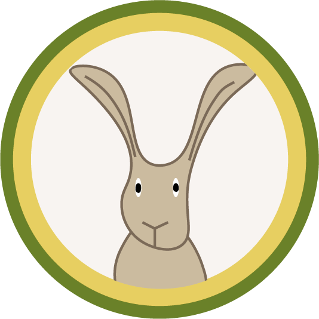

natur
Øens natur
Stige Ø har en meget alsidig natur. Nogle dele af øen byder på overdrevsvegetation, andre steder er der strandeng, og du finder også områder, hvor haveplanter vokser vildt. De mange planter giver næring til masser af gnavere og sangfugle, som igen danner fødegrundlag for et stort antal rovfugle. Der vokser flere hundrede forskellige plantearter på Stige Ø. Årsagen er de store udyrkede arealer, som ikke udsættes for maskiners jordbehandling eller sprøjtning med pesticider. Tilsammen udgør planterne en fantastisk palet af farver, fra rød over violet til grøn, hvid, gul og blå.
Biller og muslinger på øen
Stige Ø er en usædvanlig rig sommerfuglelokalitet. Her lever mange arter og mange eksemplarer af hver art. Det skyldes de store udyrkede arealer med mange vilde og dyrkede planter. En sommerfugl skal have planter i alle dyrets stadier. Især er blomstrende urter vigtige. Larven skal have en bestemt plante at æde, så den kan forvandle sig til voksen sommerfugl, og den voksne sommerfugl skal have blomster, som den kan suge nektar fra. De fleste sommerfugle du ser på Stige Ø, er det, man kalder dagsommerfugle – en praktisk betegnelse for sommerfugle, der flyver om dagen. Dagsommerfugle har kølleformede følehorn; vingerne holdes i hvile fladt udbredt eller sammenklappet over ryggen med vingeoversiderne mod hinanden. Der er store mængder af muslinger i Odense Fjord. De lever af at frafiltrere vandets indhold af mikroalger. Det er godt for fjorden, da indholdet af alger er unaturlig højt som følge af udledte næringsstoffer fra især dyrkede arealer og rensningsanlæg. Tidligere var der mange penge i muslinger. Se mere om Mortensens Skalleværk på Stige Ø.
  Fugle på øen
Den inderste del af Odense Fjord er internationalt fuglebeskyttelsesområde. Fra Stige Ø er der særdeles gode muligheder for at studere de mange fugle på fjorden. Nogle fugle ser vi ikke så meget til ud for Stige Ø, medmindre det er isvinter. Det gælder troldand, taffeland og stor skallesluger. Hvorfor er der så mange ynglende sanglærker og engpibere samt store flokke af rastende stillits og bjergirisk på Stige Ø? Ganske enkelt fordi området er uforstyrret i modsætning til agerlandet, hvor der jævnligt pløjes og sås. Da Stige Ø heller ikke sprøjtes med pesticider, er der flere insekter og vilde urter med frø end på agerlandet – og dermed også mere føde til fuglene.

De tusinde svaners fjord
Der lever to svanearter på fjorden: Knopsvane og sangsvane. Knopsvanen er den hjemlige art, som yngler i fjorden. Den er let at kende på sit røde næb med sort knop. Knopsvanen er som regel tavs, i modsætning til sangsvanen. Sangsvanen kommer hertil på træk fra Sverige, Norge, Finland og Rusland. Til forskel fra knopsvanen, er dens næb gult og sort.
Rovfugle
Hvorfor er der så mange rovfugle på Stige Ø? Fordi Stige Ø er et af kommunens større udyrkede arealer, som er bevokset med halvhøj vegetation i form af græs og urter. Rovfugle og ugler foretrækker denne vegetation, fordi her er mange gnavere. Den giver også gode muligheder for at overraske småfugle.
Pattedyr på øen
Der findes en række pattedyr på Stige Ø. Planterne giver et godt fødegrundlag for harer og gnavere, men du kan også opleve større pattedyr, såsom ræve og rådyr. De sidste er et flot syn, især når du møder rådyrene i skumringen.
Naturbeskyttelse
Den inderste del af Odense Fjord indgår i dag i et internationalt fuglebeskyttelsesområde. Det har stor betydning for fire arter af trækkende vandfugle. Inderfjorden er et af landets vigtigste raste- og overvintringsområder for sangsvane, knopsvane og blishøne. På selve øen er al jagt forbudt. Alle andre aktiviteter er velkomne på Stige Ø. Dog skal du tage særligt hensyn til fuglene på Koholm i perioden 1. marts til 15. juli, da de yngler på dette tidspunkt. EF-fuglebeskyttelsesdirektivet blev vedtaget i 1979. Det forpligter EU-landene til at beskytte udvalgte levesteder for fugle – typisk svaner, gæs, ænder og vadefugle. I Danmark udpegede Skov- og Naturstyrelsen allerede i 1983 en række områder, som var af særlig værdi for fuglebeskyttelsen, bl.a. hele Seden Strand og en række tilstødende strandenge. Årsagen var, at der i dette område fandtes ynglende rørhøg, klyde, splitterne, havterne og fjordterne. Dertil kom en række rastende fugle: Knopsvane, sangsvane, blishøne og toppet skallesluger. Den vestlige del af Odense Fjord er i dag omfattet af direktivet i modsætning til den østlige (øst for en linie mellem fyret på Enebærodde og Dræby Feds østende - markeret på kortet). Områdets status fik betydning, da Odense Byråd i 1985 besluttede at udvide lossepladsen til Stige Ø Nord. Byrådet blev underkendt af først Amtsrådet og siden Miljøministeriet, netop med henvisning til halvøens betydning for fuglelivet.